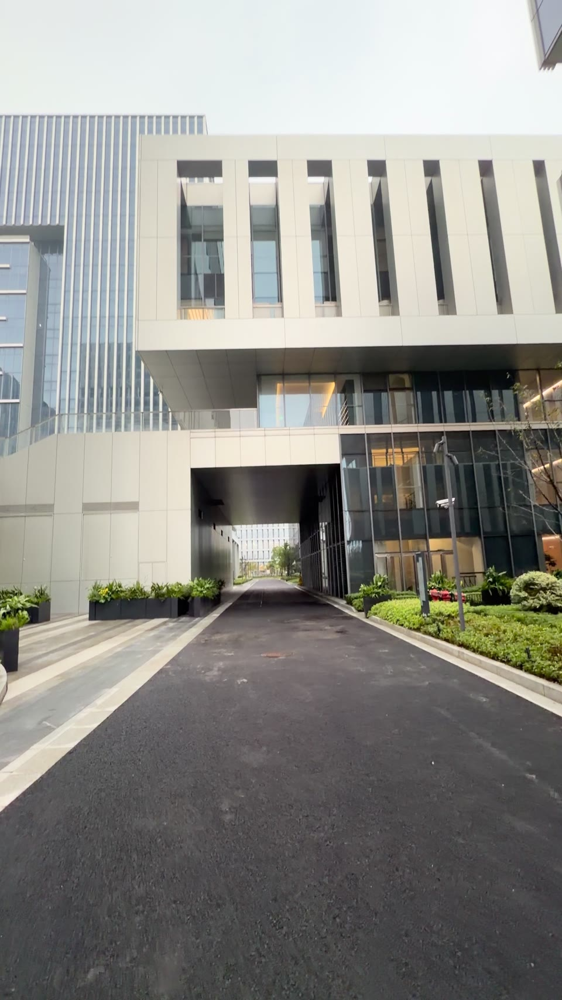
B04 / B05 连接体
白天校核玻璃、立柱和架空关系；沿用此前 U06 还原。
三段本人实录 · 67 张时间轴抽帧 + 7 张方向校正版 · 12 张重点素材。点击时间戳即可听对应原声。
原声为原视频主 AAC 立体声轨直接复制，未降噪、未剪掉口述、未重新编码。完整 MOV（包含额外空间音轨）仍保留原路径，校验值见 来源清单。照片经 HDR → SDR 转换，不能作为测光数据。没有上传至转写服务。

白天校核玻璃、立柱和架空关系；沿用此前 U06 还原。
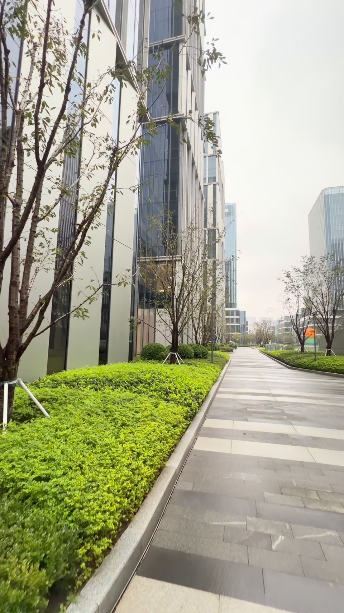
带状铺装、低绿篱、支撑幼树。
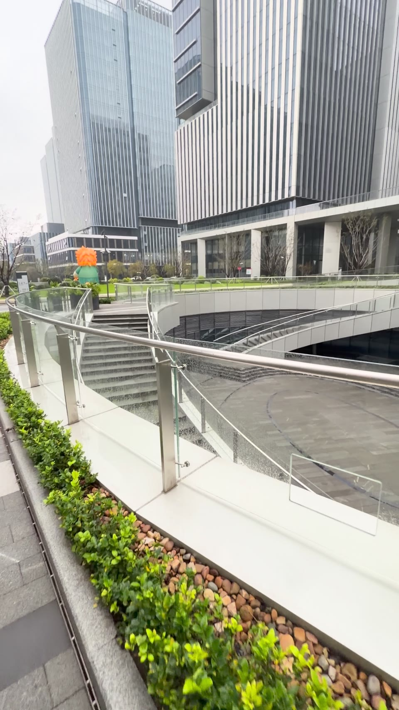
玻璃围护与低矮地被；完整尺寸仍不确定。
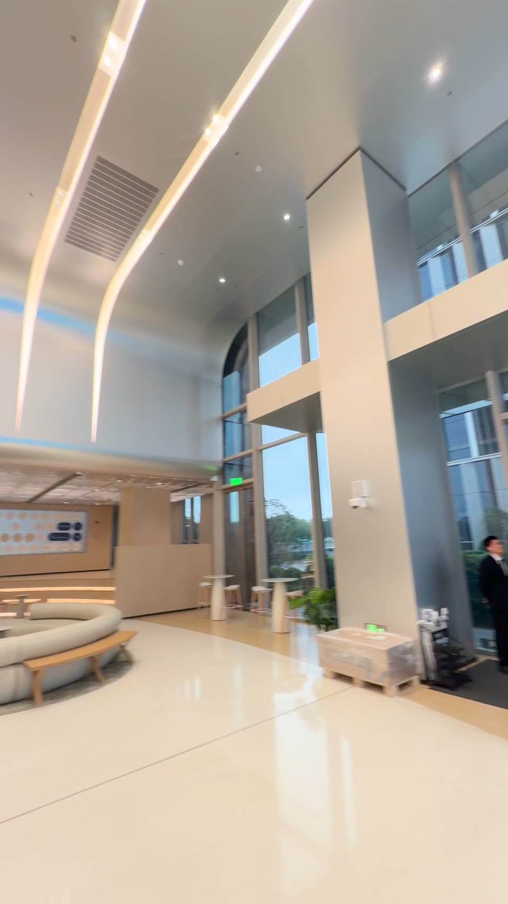
只保存可见装潢参考，不扩展可进入楼层。
未逐字人工听校；例如“棺木”应结合画面理解为灌木，“照在”疑为“罩在”。保留机器原稿，不把误识别当事实。
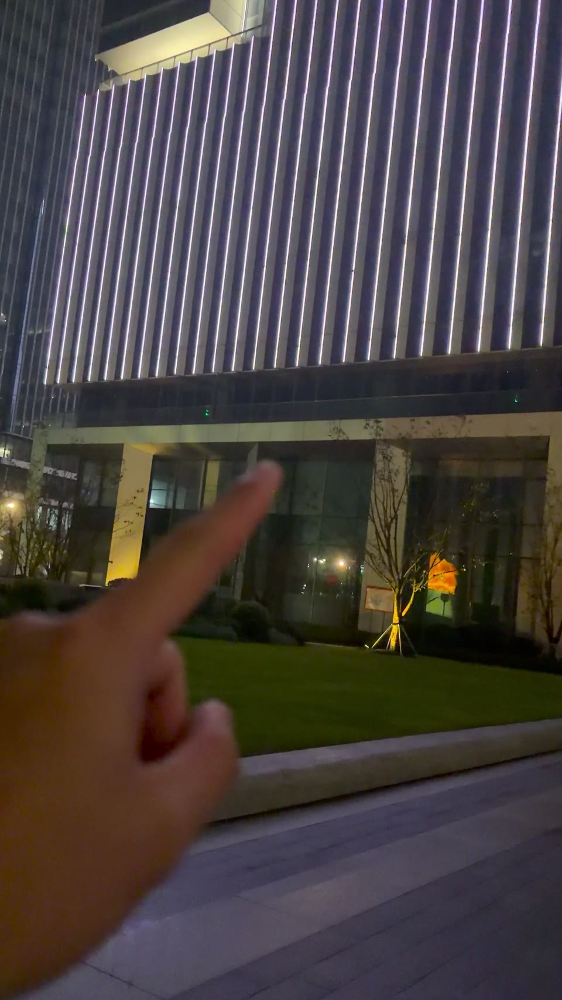
用户说明白天不亮；日间改中性灯槽，夜间发光。
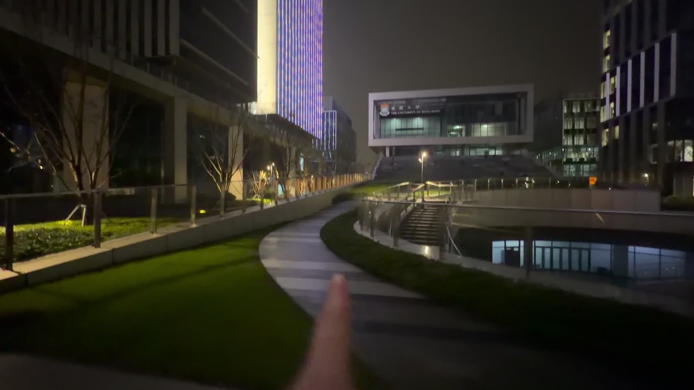
小道到台阶距离较短；缺少可测完整平面，本轮不贸然改变高程。
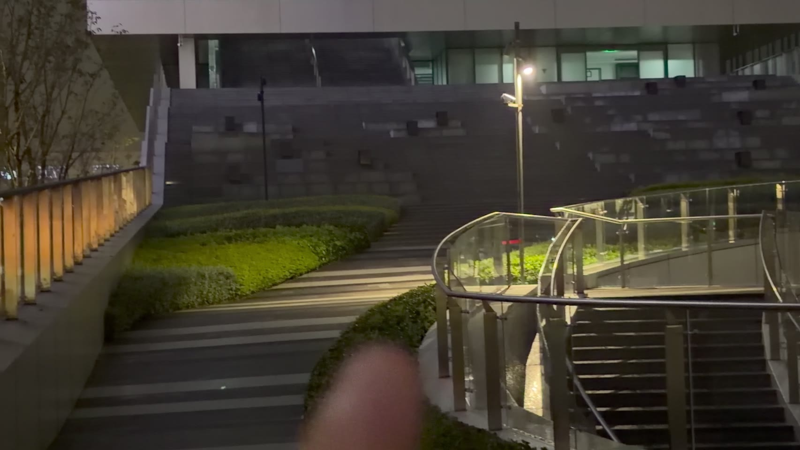
保存为下一轮缩短平道、核对台阶衔接的重点证据。
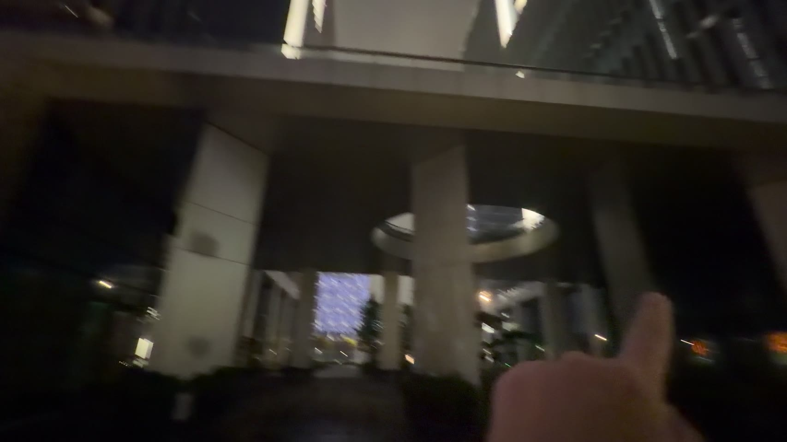
从路上挪到西侧两楼间，模型与碰撞同步；中心坐标仍估计。
未逐字人工听校；例如“棺木”应结合画面理解为灌木，“照在”疑为“罩在”。保留机器原稿，不把误识别当事实。
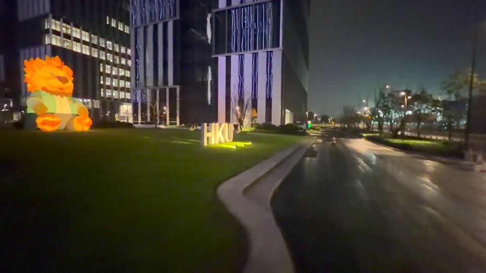
前后关系可见，不把远近不同的物体当比例尺。
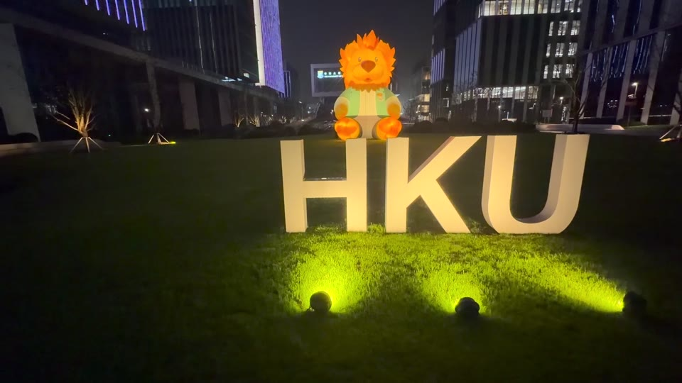
依据语音 H 宽 30–40cm 目测，暂取 .40m；增加三盏地灯。
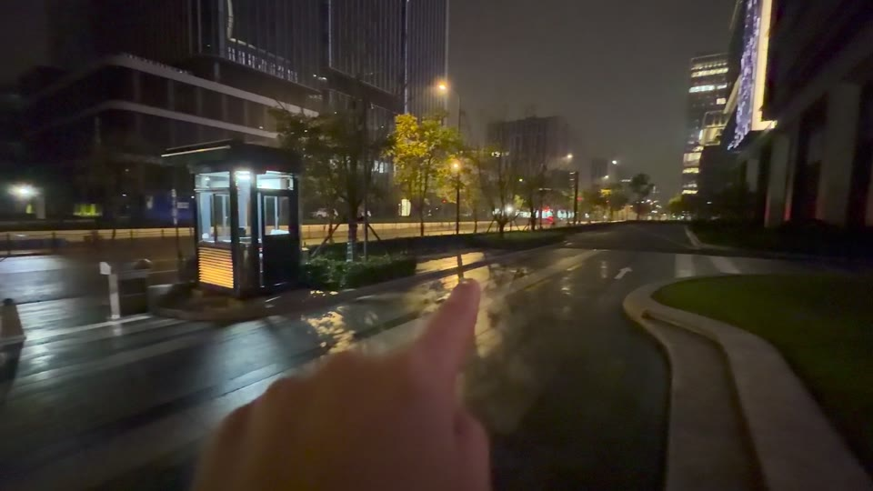
路外连续低绿篱；保留出入口空隙。
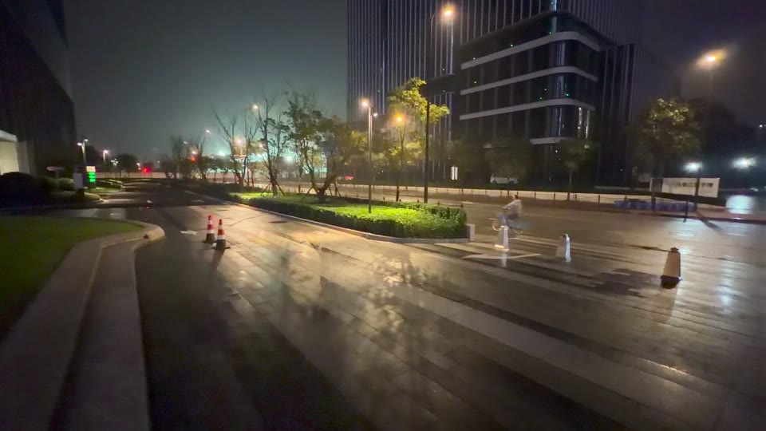
只补有证据的植被连续性，未假定雨天路面是固定水体。
未逐字人工听校；例如“棺木”应结合画面理解为灌木，“照在”疑为“罩在”。保留机器原稿，不把误识别当事实。